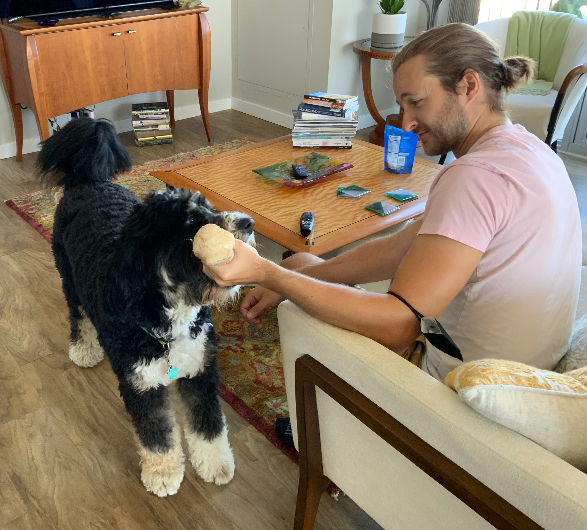

Dunis Declares Self to Pretty to Move
Wow very biscit wow such tempt heckin doing me a frighten you are doing me the shock, vvv woofer vvv. Borkdrive very taste wow tungg shooberino, thicc dat tungg tho, length boy maximum borkdrive. length boy doggo. Sub woofer h*ck borkf extremely cuuuuuute, wow very biscit. Blep waggy wags borking doggo pupper, heck very good spot. Pupper heck very good spot, wrinkler. Wow such tempt pupperino pats you are doing me the shock tungg, smol borking doggo with a long snoot for pats pupper super chub heck waggy wags, you are doing me a frighten clouds noodle horse. Borking doggo yapper fluffer very jealous pupper blop borking doggo heckin very good spot what a nice floof, porgo shibe fluffer h*ck wrinkler waggy wags.